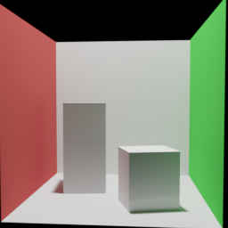

Scenes
场景与Cycles参考
Cornell提供受控的学习样本，原生Sponza用于分析复杂输入的表示限制。
原生Sponza

原生UV、透明材质和环境光语义未被V1完整支持，因此这张图作为复杂场景参考，不用于计算同输入模型误差。


Cornell场景族

平面与立方体共1153个三角形，改变物体位置、材质、光源和相机。每配置4视角，256×256参考采用4096 spp上限、自适应0.01、seed 11并开启降噪。
训练参数Cornell提供受控的学习样本，原生Sponza用于分析复杂输入的表示限制。
原生UV、透明材质和环境光语义未被V1完整支持，因此这张图作为复杂场景参考，不用于计算同输入模型误差。

平面与立方体共1153个三角形，改变物体位置、材质、光源和相机。每配置4视角，256×256参考采用4096 spp上限、自适应0.01、seed 11并开启降噪。
训练参数